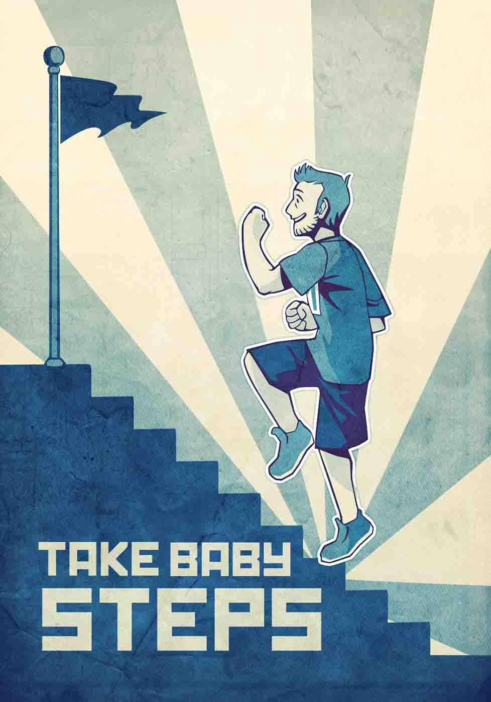

Health behaviors are interconnected.
A small change in one area, like cutting down on tv time, triggers change in other areas, like diet.
A combination of small steps leads to big change: improved nutrition, greater activity, more motivation.
Two small behavior changes at a time, jump-started over a few weeks, are optimal.
Do two. Stick with them for six weeks, the amount of time needed to form a habit. Add two more.
